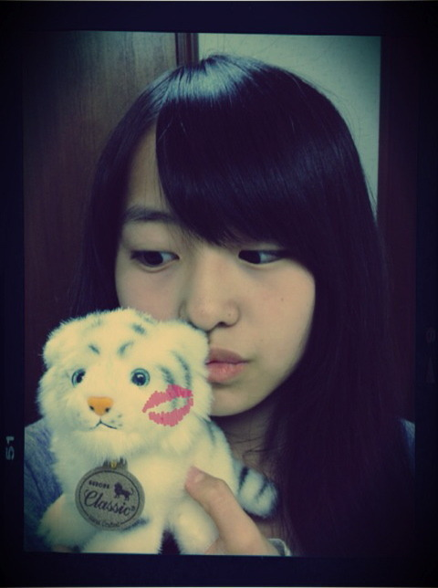
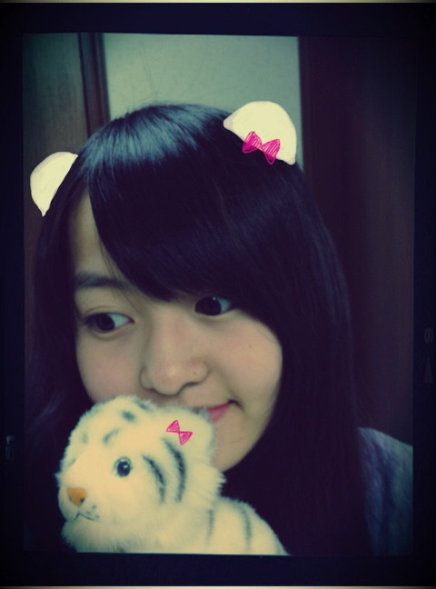

| 2011/12 18 Sun | 30回目*marika |
30回目***
やった-----!!!
こんばんわ。ベビたんです。
昨日は更新しなくてすみません;(
いつも読んでくださってる方、
初めて読んでくださった方、
コメントしてくださった方
ありがとうございます!!
昨日はみんなでお仕事でした--♪
お疲れさまです。
にぎやかでいいねぇ＊
仕事の合間に
なぁちゃん、せいらと
寝てたんやけど
私だけ寝てる姿がおかしかったらしい...
しゃしん撮られてもうた がーん
笑
なぁちゃんとちはるが
変なダンス踊ってた笑
3人ではしゃいでた!!
ゆきなともわいわいしとった!!
笑ったなぁ〜。
昨日のお仕事はめちゃ楽しかった♡
写真撮られるのすきだなぁ☆
とにかく楽しかった楽しかった♪るんるん
今日はLessonもお仕事もなくて
久しぶりの休みでした:D！
いつもより長い時間睡眠とったから
疲れもとれたぜっ!!
そんで録画してた
お笑い見てました***
今日はキムチ鍋やった♡
鍋どんだけ~~笑
でもおいしいからね~。むふ
今BloGかきながら
みかん食べてるよ。
みかん5個目♡

chu

お気に入りの子♡
癒しなの:)
20日から
『乃木坂46クリスマス スペシャルウィーク』
in 銀座ソニービル
始まります☆*
どきどき
うきうき
わくわく
みなさん!!
乃木坂46と過ごすクリスマス。
一緒に楽しみましょう♪
みなさんと一緒に過ごすことができるの
ほんとうにうれしいです!!
うきうきHaPpyです＊るんるん
風邪ひいてる方にパワーを....
治れー!!
う~~~~~~~はあっ!!!!!←
さむいけど、がんばろう!!
しっかりあったかい格好してください。
早く会いたいな~:D!!
今日もお疲れさまりか☆

MerrY ChRistMAs...
ベビたん*****bA by marika